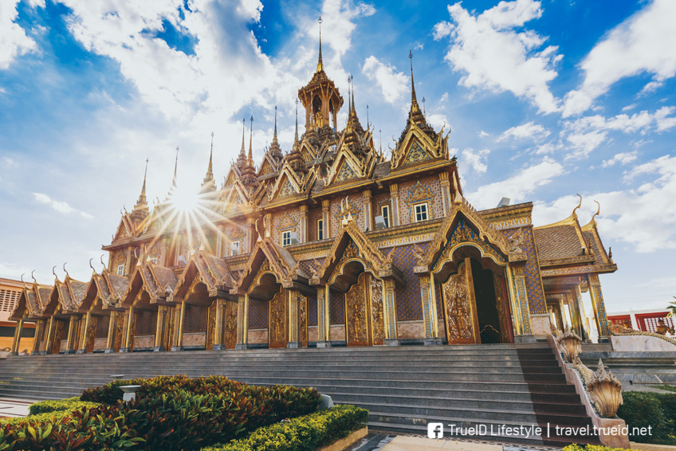

<html>
<head>  
    <title> สถานที่ภาคกลางที่ต้องไปเที่ยว </title></head>
    <body background="b2.jpg"></body>   
<body>
    <marquee bgcolor="#FFFFFF" direction="lefe" scrollamount="6" width="100%">  <font size = "7"> สถานที่ภาคกลางที่ต้องไปเที่ยว </font>  </marquee> <br><br>
     
    <center> <font color="red"> <font size = "5"> วัดพระแก้ว </font>   </font> </center>	<br>
        <center>  <font size = "4"> กรุงเทพฯ </font>  </center>	<br> 
            <center></center> <br>
            <center> <font size = "4"> วัดพระแก้ว หรือ วัดพระศรีรัตนศาสดาราม สะกดทุกสายตาด้วยความวิจิตรสวยงาม <br>
                เป็นวัดคู่บ้านคู่มืองของไทยเรา อีกทั้งยังเป็นที่ประดิษฐาน พระพุทธมหามณีรัตนปฏิมากร <br>
                หรือ พระแก้วมรกต ไว้อีกด้วยค่ะ ที่นี่มีผู้เข้าชมแบบไม่ขาดสายทั้งคนไทย และชาวต่างชาติ <br>
                เรียกได้ว่าหากมาที่ กรุงเทพฯ และไม่มาชมความสวยงามที่วัดพระแก้วแล้วล่ะก็ถือว่ามาไม่ถึง กรุงเทพฯ กันเลยทีเดียว <br>   <center>==================</center><br>


    <center> <font color="red"> <font size = "5"> อุทยานแห่งชาติคลองวังเจ้า </font>   </font> </center>	<br>
        <center>  <font size = "4"> กำแพงเพชร </font>  </center>	<br> 
            <center></center> <br>
            <center> <font size = "4"> 
                อุทยานแห่งชาติคลองวังเจ้า ตั้งอยู่ที่จังหวัดกำแพงเพชร ที่มีความโดดเด่นในเรื่องความสวยงาม<br>
                มีน้ำตกถึง 3 แห่ง แต่น้ำตกที่ดึงดูดนักท่องเที่ยวมากที่สุดในอุทยานฯ คงหนีไม่พ้น น้ำตกคลองสมอกล้วย <br>
                ที่มีความแตกต่างกับน้ำตกแห่งอื่นภายในอุทยานฯ ด้วยสีน้ำที่คล้ายกับสีบุษราคัม <br>
                เรียกได้ว่าเป็นอุทยานฯ ที่เหมาะสำหรับตั้งแคมป์แล้วไปตะลุยเดินให้ทั่วอย่างชิลล์ว <br>   <center>==================</center><br>


    <center> <font color="red"> <font size = "5"> วัดคีรีวงศ์ </font>   </font> </center>	<br>
        <center>  <font size = "4"> นครสวรรค์ </font>  </center>	<br> 
            <center></center> <br>
            <center> <font size = "4"> 
                วัดคีรีวงศ์ ตั้งอยู่ที่บนเขาดาวดึงส์ มี องค์พระจุฬามณีเจดีย์ มหาเจดีย์สีทองสง่าสวยงาม <br>
                มองเห็นได้อย่างชัดเจน สะดุดตาจนมีนักท่องเที่ยวแวะมาสักการะกันมากมาย เพราะความสวยงามของวัด <br>
                และเมืองนครสวรรค์ หากมาช่วงพระอาทิตย์ใกล้จะตกดินจะเห็นความงดงามเพิ่มมากขึ้นด้วย <br>
                นอกจากนี้ใครที่อยากชมวิวแบบชัดๆ สามารถขึ้นไปบนหอชมเมืองที่สามารถมองวิวได้โดยรอบถึง 360 องศาเลยทีเดียว <br>   <center>==================</center><br>   

    <center> <font color="red"> <font size = "5"> บึงสีไฟ </font>   </font> </center>	<br>
        <center>  <font size = "4"> พิจิตร </font>  </center>	<br> 
            <center></center> <br>
            <center> <font size = "4"> 
                จุดท่องเที่ยวที่เป็นสัญลักษณ์ของเมืองพิจิตร แลนด์มาร์คสำคัญที่ไม่ควรพลาดเลยก็คือ บึงสีไฟ <br>
                ที่นี่จะมีจุดท่องเที่ยวที่น่าถ่ายภาพอยู่หลายมุมไม่ว่าจะเป็น รูปปั้นชาละวันที่ถูกยกให้เป็นรูปปั้นจระเข้ที่ใหญ่ที่สุดในโลก <br>
                บ่อจระเข้ที่มีจระเข้เยอะสุดๆ ระหว่างเดินชมรอบๆ ก็สามารถแวะที่ สวนสมเด็จพระศรีนครินทร์ <br>
                เพื่อพักเหนื่อยให้อาหารปลาแบบสวยๆ ถ่ายรูปสวยอวดเพื่อนแบบเก๋ๆ ได้อีกด้วย <br>   <center>==================</center><br>
    
                
    <center> <font color="red"> <font size = "5"> ตลาดน้ำทุ่งบัวแดง</font>   </font> </center>	<br>
        <center>  <font size = "4"> นครปฐม </font>  </center>	<br> 
            <center></center> <br>
            <center> <font size = "4"> 
                คนที่ชอบความชิลล์แบบไทยๆ ชวนมาเที่ยวตลาดน้ำ <br>
                ลงเรือ ชมบัวแดงกันที่ ตลาดน้ำทุ่งบัวแดง ณ บางเลน <br>
                ไม่ใกล้ไม่ไกลแค่นครปฐม นี่เองค่ะ ขับรถชิลล์แป๊ปเดียวถึงตลาดน้ำทุ่งบัวแดง <br>
                ณ บางเลน ตั้งอยู่กลางทุ่งนาและทุ่งบัวแดงสวยๆ เป็นที่เที่ยวที่ทำให้นักท่องเที่ยวได้มาสัมผัสธรรมชาติ <br>
                ความสวยงามของบัวแดง มีร้านค้า และร้านอาหารอร่อยมากมายกว่า 80 ร้านค้าเลยทีเดียว แน่นอนว่า ของอร่อยเพียบ <br>   <center>==================</center><br>


    <center> <font color="red"> <font size = "5"> น้ำตกสาริกา </font>   </font> </center>	<br>
        <center>  <font size = "4"> นครนายก </font>  </center>	<br> 
            <center></center> <br>
            <center> <font size = "4"> 
                น้ำตกสาริกาน้ำตกขนาดใหญ่ไหลลงจากหน้าผาถึง 9 ชั้น กับธรรมชาติสีเขียวขจีมีมุมสวยๆ <br>
                ไว้ให้เล่นน้ำเบาๆ ถ่ายรูปชิคๆ ยิ่งถ้าไปในฤดูฝนก็จะมีน้ำมากเป็นพิเศษ <br>
                จึงทำให้ส่วนใหญ่จะมีนักท่องเที่ยวเลือกที่จะไปช่วงหน้าฝน <br>
                เพราะเห็นธรรมชาติได้อย่างเต็มที่และสมบูรณ์เหมาะกับการเล่นน้ำสุดๆ<br></center></font>   <br>   <center>==================</center><br>


    <center> <font color="red"> <font size = "5"> ตลาดร่มหุบ</font>   </font> </center>	<br>
        <center>  <font size = "4"> สมุทรสงคราม </font>  </center>	<br> 
            <center></center> <br>
            <center> <font size = "4"> 
                เที่ยวสมุทรสงครามทั้งทีจะไม่มาที่ตลาดที่น่าหวาดเสียวที่สุดในโลกจนชาวบ้านเรียกกันว่า <br>
                ตลาดเสี่ยงตาย ก็คงไม่ได้ ชื่อน่ากลัวสุดๆ แต่ตลาดร่มหุบถือว่าเป็นตลาดที่มีชื่อเสียงระดับโลก<br>
                ที่มีนักท่องเที่ยวแวะเวียนกันมาเที่ยวมากมายทีเดียวตลาดร่มหุบมีของดีมากมายของเมืองสมุทรสงครามวางขายทั้งปลาทูแม่กลอง <br>
                ผักสดอย่างใบชะครามที่หาทานยาก แถมราคาก็ถูกสุดๆ ที่ตลาดแห่งนี้จะมีการหุบแผงทั้งหมด 7 รอบด้วยกันใครจะไปก็ดูรอบของรถไฟดีๆ <br>   <center>==================</center><br>

    <center> <font color="red"> <font size = "5"> วัดท่าซุง</font>   </font> </center>	<br>
        <center>  <font size = "4"> อุทัยธานี </font>  </center>	<br> 
            <center></center> <br>
            <center> <font size = "4"> 
                วัดจันทาราม หรือ วัดท่าซุง ที่หลายคนรู้จักกันดีว่ามีวิหารแก้ว 100 เมตร<br>
                ที่ประดับด้วยกระจกโมเสกสีขาวใสวิบวับ และยังคงเป็นที่เก็บรักษาสังขารของหลวงพ่อพระราชพรหมยาน <br>
                หรือที่ชาวบ้านเรียกกันว่าหลวงพ่อฤๅษีลิงดำ อยู่ในโลงแก้ว ตั้งภายในวิหารแก้วแต่อีกสิ่งหนึ่งที่น่าสนใจภายในวัดท่าซุงนั่นก็คือ <br>
                ปราสาททองคำ ไม่ต้องบอกก็น่าจะเดาออกว่าอลังการขนาดไหน <br>
                ด้วยการใช้ทองคำเปลวฉาบทั้งตัวปราสาทจนได้ปราสาทสีทองตระการตา เรียกได้ว่านอกจากอิ่มบุญแล้วยังอิ่มใจด้วย <br>   <center>==================</center><br>


    <center> <font color="red"> <font size = "5"> วัดขุนอินทประมูล</font>   </font> </center>	<br>
        <center>  <font size = "4"> อ่างทอง </font>  </center>	<br> 
            <center></center> <br>
            <center> <font size = "4"> 
                มาเที่ยวอ่างทองก็ต้องมาไหว้พระทำบุญ เพราะว่ามีวัดอยู่หลากหลายแห่ง <br>
                แต่ที่เป็นที่สะดุดตานั้นคงหนีไม่พ้นวัดขุนอินทประมูล วัดดังแห่งจังหวัดอ่างทอง <br>
                มีอุโบสถที่สร้างความตื่นตาตื่นใจให้กับนักท่องเที่ยวนั่นก็คืออุโบสถไฮเทคที่ชาวบ้านเรียกกัน <br>
                เพราะภายในอุโบสถมีทั้งลิฟต์ และบันไดเลื่อนไว้คอยอำนวยความสะดวกกับนักท่องเที่ยวที่นี่ยังมีประติมากรรมฝาผนัง<br>
                ที่เข้ากับยุคปัจจุบันเป็นอย่างดี หลังจากชมภายในอุโบสถแล้ว สิ่งที่พลาดไม่ได้อีกสิ่งหนึ่งก็คือ <br>
                การสักการะพระพุทธไสยาสน์โบราณที่สร้างมาตั้งแต่สมัยสุโขทัย ใครที่มีแพลนจะมาเที่ยวอ่างทองก็ลองแวะมาสักครั้ง <br>   <center>==================</center><br>


    <center> <font color="red"> <font size = "5"> หออัครศิลปิน</font>   </font> </center>	<br>
        <center>  <font size = "4"> ปทุมธานี </font>  </center>	<br> 
            <center></center> <br>
            <center> <font size = "4"> 
                หออัครศิลปินจัดแสดงเกี่ยวกับผลงานด้านศิลปะ และวัฒนธรรมอันทรงคุณค่า <br>
                ในพระบาทสมเด็จพระปรมินทรมหาภูมิพลอดุลยเดช ทั้งหมด 9 ด้าน <br>
                โดยรวบรวมศิลปะหลายแขนงมาให้ชมในลักษณะนิทรรศการ <br>
                ด้านหัตถกรรม ด้านวาทศิลป์ ด้านวรรณศิลป์ ด้านจิตรกรรม ด้านถ่ายภาพ ด้านภูมิสถาปัตยกรรม ด้านประติมากรรม ด้านคีตศิลป์ <br>
                และด้านการพระราชนิพนธ์เพลง รวมถึงการรวบรวมผลงานศิลปะของศิลปินแห่งชาติมาจัดแสดงไว้ให้ชมอีกด้วย <br>
                เข้าชมฟรีแบบไม่เสียค่าใช้จ่าย เรียกได้ว่าเป็นศิลปะที่มีคุณค่าทางจิตใจที่อยากจะให้ทุกคนได้สัมผัส <br>   <center>==================</center><br>


</body>
</html>